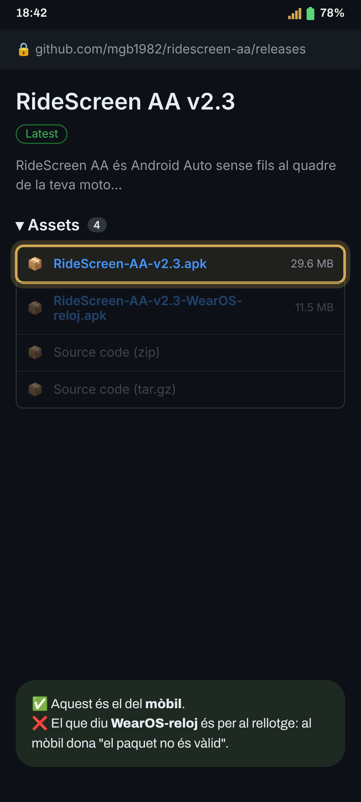
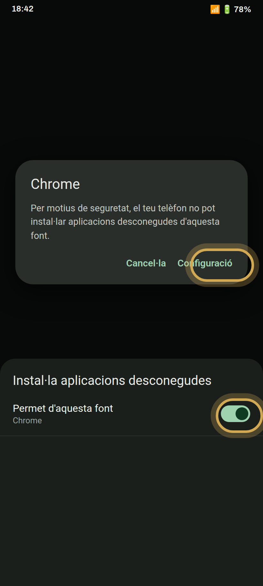
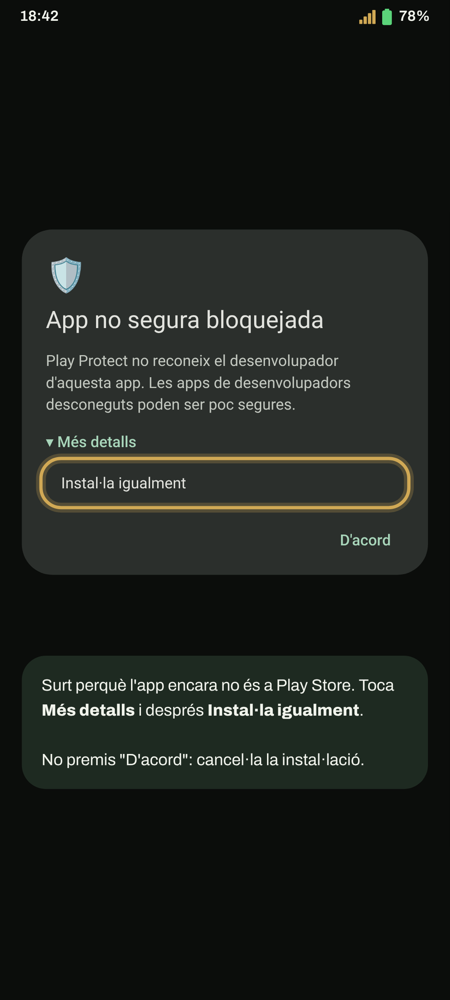
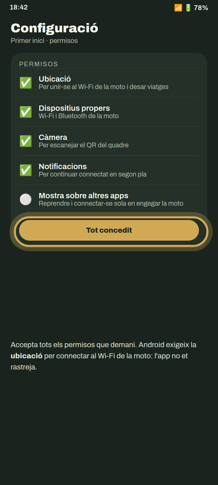
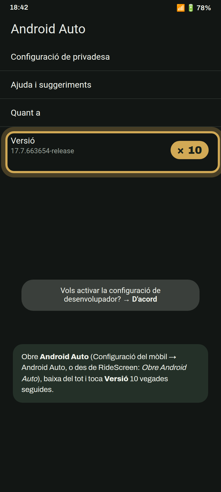
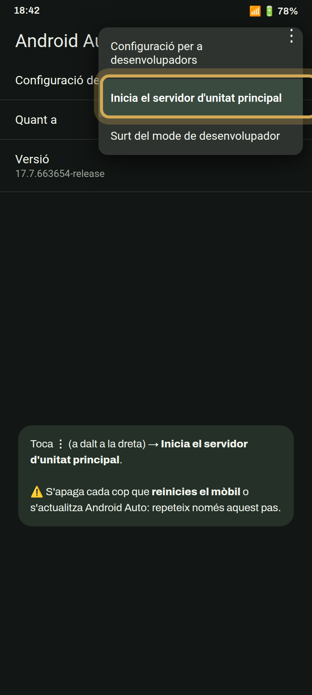
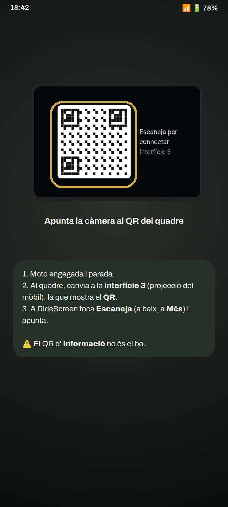
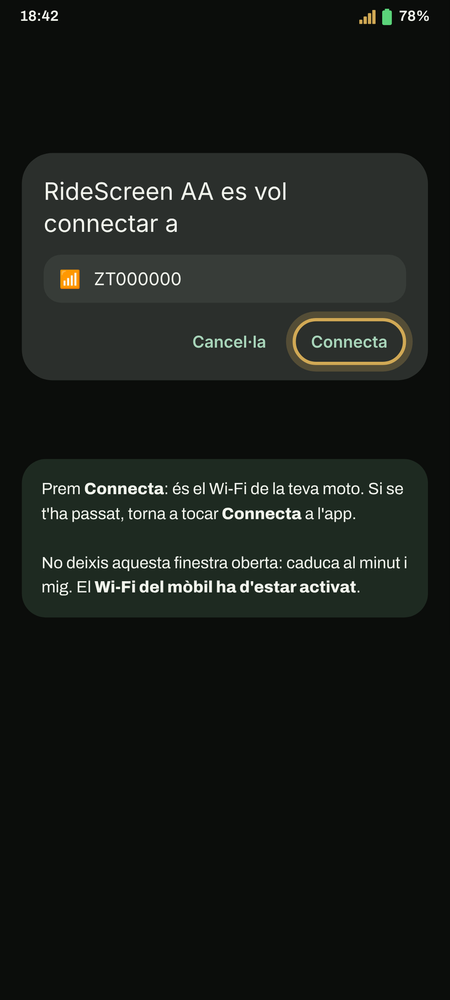
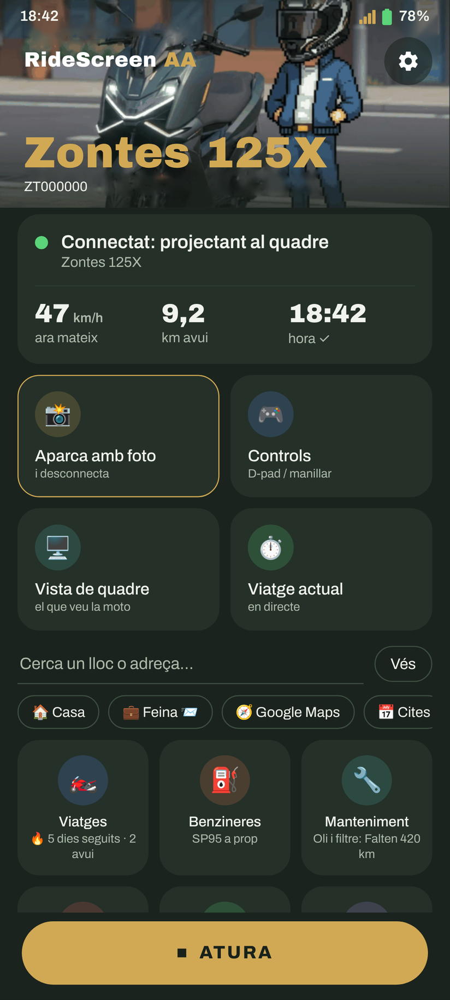

Android Auto al quadre de la teva Zontes, pas a pas. El primer cop triga uns minuts; després n'hi ha prou amb un toc, o cap.
Tens un rellotge Wear OS? Després continua amb la guia del rellotge.
Toca el botó: es descarrega directament l'última versió (RideScreen-AA-v2.3.apk o la que toqui).
Descarregar l'APKPrefereixes GitHub? A la pàgina de l'última versió, a Assets, toca l'APK que comença per RideScreen-AA-v.

Obre el fitxer descarregat. Si Android avisa que no pot instal·lar apps d'aquesta font, toca Configuració, activa Permet d'aquesta font i torna enrere.
Després toca Instal·la.

Apareix perquè l'app encara no és a Play Store. Toca Més detalls i després Instal·la igualment.

El primer cop s'obre la Configuració. Accepta tots els permisos que demani, o toca Tot concedit per revisar-los d'un cop.
Android exigeix la ubicació per unir-se al Wi‑Fi de la moto i per desar els teus viatges. L'app no et rastreja.

Obre els ajustos d'Android Auto (Configuració del mòbil → Android Auto, o des de RideScreen). Baixa del tot i toca Versió 10 vegades seguides. Accepta l'avís.
Només cal fer-ho un cop.

A la mateixa pantalla, toca ⋮ (a dalt a la dreta) → Inicia el servidor d'unitat principal.

Al quadre, canvia a la interfície de screen mirroring (a la 125X, la 3): la pantalla de projecció del mòbil, que mostra un codi QR. A RideScreen toca Escaneja (a baix, a Més) i apunta-hi la càmera.

Toca Connecta a RideScreen. Android pregunta si l'app es pot connectar al Wi‑Fi de la moto (es diu com la teva moto, per exemple ZT…). Toca Connecta.

En pocs segons apareix Android Auto a la pantalla de la moto. Pots desar el mòbil a la butxaca.
El cop següent n'hi ha prou de tocar Connecta. Perquè es connecti sola en engegar la moto: ⚙️ Ajustos → Connecta quan es connecti un dispositiu Bluetooth → tria el Bluetooth del quadre (comença per "ZT") i permet Mostra sobre altres apps.
Truc: un cop connectada, pots passar el quadre a una altra interfície per veure el quadre original. L'app continua connectada i registrant el viatge, i en tornar a la de screen mirroring Android Auto apareix a l'instant.
El primer cop que connectis, l'app et demanarà el micròfon: tria Mentre s'utilitza l'app per poder fer servir «Ok Google» i el botó de veu de l'intercomunicador.

Activa el Wi‑Fi al mòbil. No cal connectar-se a cap xarxa: l'app s'uneix sola a la de la moto.
L'app oficial de la moto (Zontes / EasyConnection / Carbit) està ocupant la connexió amb el quadre. Configuració → Aplicacions → aquella app → Força l'aturada, i torna a Connecta. Si no la fas servir, el més senzill és desinstal·lar-la.
A RideScreen toca ❓ Ajuda → Compartir registres just després de la fallada, i envia-ho al grup dient la teva moto i el teu mòbil. Els registres no inclouen contrasenyes ni números de sèrie.
RideScreen AA és gratuïta i de codi obert, basada en OpenCfMoto d'Alexandru (zanderp). No és una app oficial de Zontes. Les captures són il·lustratives: els textos exactes poden variar segons el teu mòbil.